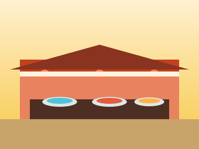
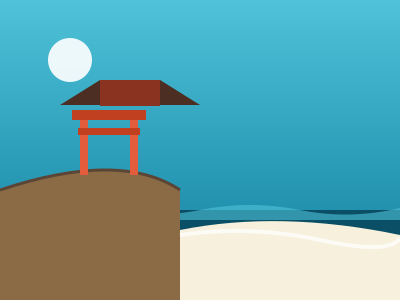
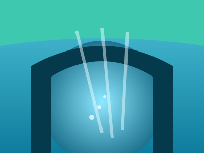
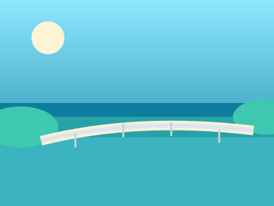
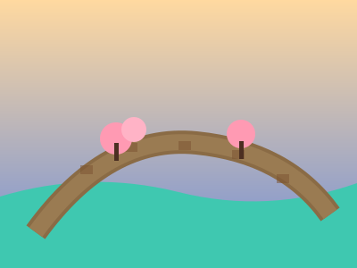
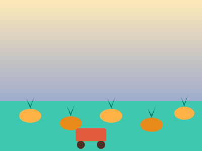

那覇・北谷・恩納村・本部北部の4エリアから、定番の絶景・世界遺産・街歩きスポットを厳選して紹介します。
琉球王国の政治・文化の中心だった城跡。正殿は復元工事中の期間も守礼門や城郭は見学可能で、高台からの那覇市街の眺望も見どころ。
全長約1.6kmのメインストリート。お土産店・飲食店・雑貨屋が軒を連ね、沖縄旅行で必ず立ち寄りたい定番の散策スポット。

市場1階は鮮魚・精肉などの市場、2階は食堂街。1階で買った魚介をその場で調理してもらう「持ち上げ」体験ができる名物スポット。

パワースポット崖の上に社殿が建つ「沖縄一の宮」。すぐ下に那覇市内で唯一遊泳できる波の上ビーチがあり、参拝とビーチ散策を一度に楽しめる。
大観覧車がシンボルの海沿いエンタメタウン。ショッピングモール・映画館・レストランが集まり、異国情緒あふれる街並みが人気。
アメリカンビレッジのすぐそばにある人工ビーチ。波が穏やかで遊泳しやすく、夕方に染まる空と海のグラデーションが人気の撮影スポット。
境内の奥に鍾乳洞が広がる珍しい神社。ひんやりとした洞穴内を歩けるパワースポットとして、地元でも参拝者が多い。
象の鼻に似た奇岩がシンボルの断崖絶景。「万人も座せる原っぱ」の名の通り広大な芝生と紺碧の海のコントラストが美しい、恩納村随一のフォトスポット。

海遊びシュノーケリングやダイビングの聖地として知られる岬。洞窟内に差し込む光で海面が青く輝く「青の洞窟」体験ツアーが大人気。
沖縄本島屈指の高さを誇る断崖が約2kmにわたって続く岬。灯台に登れば東シナ海を一望でき、夕日スポットとしても評判。
巨大水槽「黒潮の海」を悠々と泳ぐジンベエザメとナンヨウマンタは圧巻のスケール。国営沖縄記念公園内にあり北部観光の中心的存在。

ドライブ全長1,960mの橋を渡って海上を走るドライブが爽快な離島。ハートロックなどのフォトスポットやビーチも充実し、半日観光にぴったり。

世界遺産琉球王国以前の北山王の居城跡で、世界遺産にも登録された城跡。曲線を描く城壁と一月末の桜（緋寒桜）の名所としても知られる。

パイナップル自動運転カートでパイナップル畑を巡り、試食やパイナップルワインの試飲も楽しめる体験型パーク。北部ドライブの休憩にも最適。
楽天トラベル・じゃらん・Skyscannerを横断比較して、お得な那覇行き航空券を探しましょう。